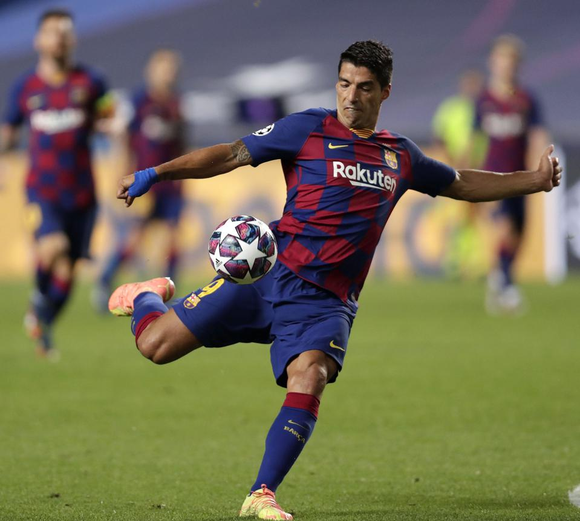

Lionel
Messi
Lionel Messi was born on 24 June 1987, in Rosario, Argentina to a working-class family. His father was a factory steel worker, and his mother a cleaner.
He began playing from an early age, and his talent was soon apparent. However, at the age of 11, Messi was diagnosed with growth hormone deficiency (GHD). This was a condition that stunted growth and required expensive medical treatment, including the use of the drug Human growth hormone.
Cristiano Ronaldo
Cristiano Ronaldo dos Santos Aveiro (born 5 February 1985 in Funchal, Madeira), better known as Cristiano Ronaldo, or by his nickname 'CR7', is a Portuguese professional footballer. He plays for Serie A club Juventus and the Portuguese national team. He is widely considered to be one of the greatest footballers of all time, and, by some, as the greatest ever
Luis Suarez

Luis Alberto Suárez Díaz was born on 24 January 1987. Suarez is a Uruguayan professional footballer who plays as a striker for Spanish club Atlético Madrid and the Uruguay national team. Widely regarded as one of the best players of his generation and one of the greatest strikers of all time, Suárez has won 19 trophies in his career, including six league titles and a UEFA Champions League title at club level, and a Copa América with Uruguay
Neymar JR

Neymar da Silva Santos Júnior, known as Neymar, is a Brazilian professional footballer who plays as a forward for Ligue 1 club Paris Saint-Germain and the Brazil national team. He is widely regarded as one of the best players in the world
Kylian Mbappe

Kylian Mbappé Lottin is a French professional footballer who plays as a forward for Ligue 1 club Paris Saint-Germain and the France national team. Widely considered as one of the best players in the world, he is known for his dribbling, explosive speed, and clinical finishing